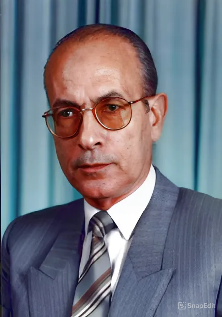

الاستاذ غير المتفرغ ورئيس مجلس القسم الاسبق
📍 النشأة والتعليم
- وُلد في 2 مايو 1938 بمحافظة الدقهلية، مصر، في أسرة أزهرية أثرت على نشأته الدينية والثقافية.
- حصل على ليسانس اللغة العربية من جامعة القاهرة عام 1958، ودبلوم عام من كلية التربية بجامعة عين شمس عام 1959، ودبلوم خاص عام 1960.
- نال ماجستير في المكتبات من جامعة لندن عام 1963، ثم الدكتوراه في المكتبات من جامعة القاهرة عام 1969
🧑🏫 المسيرة الأكاديمية والمهنية
- بدأ حياته المهنية مدرسًا للغة العربية بوزارة التربية والتعليم (1960–1961)
- شغل عدة مناصب بدار الكتب المصرية، منها رئيس قسم فهرسة المخطوطات وأمين مركز تحقيق التراث.
- عمل أستاذًا بقسم المكتبات والوثائق بجامعة القاهرة، وتدرج في المناصب حتى أصبح عميدًا لكلية الآداب بفرع بني سويف (1998–2000).
- درّس في جامعات عربية مثل جامعة الإمام محمد بن سعود الإسلامية وجامعة أم درمان الإسلامية وجامعة الملك عبد العزيز
📚 الإنتاج العلمي
- ألّف العديد من الكتب في مجال المكتبات والمخطوطات، منها (المخطوط العربي - الكتب والمكتبات العربية بين القديم والحديث )
- ترجم كتبًا مهمة مثل (المخطوطات الإسلامية في العالم - الكتاب في العالم الإسلامي )
- نشر العديد من المقالات والبحوث، وشارك في المؤتمرات والندوات العلمية، وأشرف على بحوث الدراسات العليا في تخصص المكتبات.
🏅 الجوائز والتكريم
- جائزة الملك فيصل العالميه في السعوديه - 1998
- جائزة جامعه القاهره في مجال الانسانيات في مصر - 2008/2009